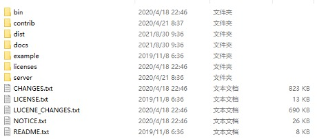
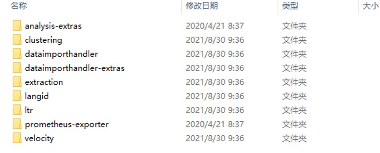
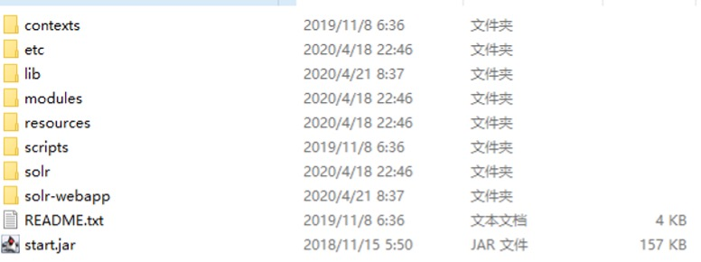
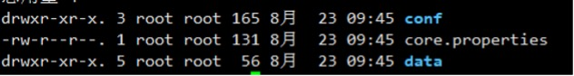
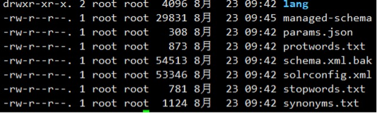
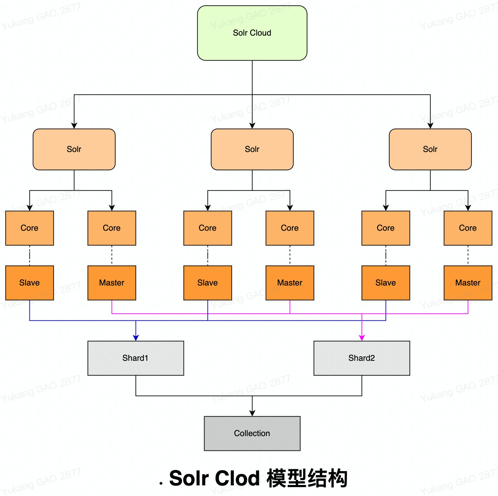

201Solr定义:2 Solr是一个开源搜索平台, 用于构建搜索应用程序. 它建立在Lucene(全文搜索库)之上, Solr不仅限于搜索, 也可以用于存储目的, 像其他NoSQL数据库一样, 它是一种非关系数据存储和处理技术.3 Solr是一个企业级的;快速的;可扩展的;可部署的;搜索和存储引擎, 用于优化搜索大量以文本为中心的数据.4
5Solr与Lucene区别:6 Lucene是一个开放源代码的全文检索工具包, 它不是一个完整的全文检索应用. Lucene仅提供了完整的查询引擎和索引引擎仍然需要关注数据获取;解析;索引查看等方面的东西. Lucene的目的是为软件开发人员提供一个简单易用的工具包, 以方便的在目标系统中实现全文检索的功能, 或者以Lucene为基础构建全文检索应用.7 Solr的目标是打造一款企业级的搜索引擎系统, 它是基于Lucene一个搜索引擎服务, 可以独立运行, 通过Solr可以非常快速的构建企业的搜索引擎, 通过Solr也可以高效的完成站内搜索功能. 8
9Solr优点:10 -> Solr是已经将整个索引操作功能封装好了的搜索引擎系统(企业级搜索引擎产品).11 -> Solr可以部署到单独的服务器上(WEB服务)提供服务, 我们的业务系统就只要发送请求, 接收响应即可, 降低了业务系统的负载并且solr的索引库就不会受业务系统服务器存储空间的限制.12 -> solr支持分布式集群, 索引服务的容量和能力可以线性扩展.13
14Solr核心特点:15 -> 先进的全文搜索功能.16 -> 基于标准的开放接口, Solr搜索服务器支持通过XML;JSON和HTTP查询和获取结果.17 -> 高度可扩展和容错, 能够有效地复制到另外一个Solr搜索服务器.18 -> Solr可以通过HTML页面管理, 使用XML配置达到灵活性和适配性.19 -> 灵活的插件体系新功能能够以插件的形式方便的添加到Solr服务器上.20 -> 强大的数据导入功能数据库和其他结构化数据源现在都可以导入;映射和转化.
71 -> bin: Solr控制台管理工具存在该目录下. 如: solr等.2 -> contrib: 该文件包含大量关于Solr的扩展.3 -> dist: 在这里能找到Solr的核心JAR包和扩展JAR包. 当我们试图把Solr嵌入到某个应用程序的时候会用到核心JAR包.4 -> docs: 该文件夹里面存放的是Solr文档, 离线的静态HTML文件, 还有API的描述.5 -> example: 包含Solr的简单示例.6 -> licenses: 各种许可和协议.7 -> server: solr应用程序的核心, SolrCore核心必要文件都存放在这里.contrib目录

81 -> analysis-extras: 该目录下面包含一些相互依赖的文本分析组件分词器相关.2 -> clustering: 该目录下有一个用于集群检索结果的引擎.3 -> dataimporthandler: DIH是Solr中一个重要的组件, 该组件可以从数据库或者其他数据源导入数据到Solr中.4 -> dataimporthandler-extras: 这里面包含了对DIH的扩展.5 -> extraction: 集成Apache Tika, 用于从普通格式文件中提取文本.6 -> langid: 该组件使得Solr拥有在建索引之前识别和检测文档语言的能力.7 -> prometheus-exporter: 采集监控数据并通过prometheus监控solr监控相关.8 -> velocity: 包含一个基于Velocity模板语言简单检索UI框架.Server目录

101 -> contexts: 启动Solr的Jetty的上下文配置.2 -> etc: Jetty服务器配置文件, 在这里可以把默认的8983端口改成其他的.3 -> lib: Jetty服务器程序对应的可执行JAR包和响应的依赖包.4 -> logs: 默认情况下, 日志将被输出到这个文件夹.5 -> modules: http\https\server\ssl等配置模块.6 -> resources: 存放着Log4j的配置文件, 这里可以改变输出日志的级别和位置等设置.7 -> scripts: Solr运行的必要脚本.8 -> solr: 运行Solr的配置文件都保存在这里, solr.xml文件, zoo.cfg文件, 使用SolrCloud的时候有用, 子文件夹configsets存放着Solr的示例配置文件, 每创建一个核心Core都会在server目录下生成相应的core名称目录.9 -> solr-webapp: Solr的平台管理界面的站点就存放在这里.10 -> tmp: 存放临时文件.结构目录

61Solr Core结构介绍:2 运行在服务器中的具体唯一命名的可管理和可配置的索引, 即内核就是Lucene中说到的索引. 一台solr服务器可以托管一个或多个内核.3
4 -> conf: 配置相关的目录.5 -> core.properties: 表示当前new_core的一些基本属性, name;config;schema;dataDir.6 -> data: 存储的数据. conf目录

2261solrconfig.xml介绍:2 这个文件是来配置SolrCore实例的相关信息. 它里面包含有ib标签、dataDir标签、requestHandler标签等.3 4 -> lib标签: 加扩展载一些的jar, 如果需要使用, 首先要把这些jar复制到指定的目录, 比如把安装包中的contrib和dist文件夹复制到SolrHome同级目录下需要把 ../../../.. 修改为../.. 5 <lib dir="${solr.install.dir:../../../..}/dist/" regex="solr-cell-\d.*\.jar"/>6 <lib dir="${solr.install.dir:../../../..}/dist/" regex=".*\.jar"/>7 <lib dir="${solr.install.dir:../../../..}/contrib/clustering/lib/" regex=".*\.jar"/>8 <lib dir="${solr.install.dir:../../../..}/dist/" regex="solr-clustering-\d.*\.jar"/>9 <lib dir="${solr.install.dir:../../../..}/contrib/langid/lib/" regex=".*\.jar"/>10 <lib dir="${solr.install.dir:../../../..}/dist/" regex="solr-langid-\d.*\.jar"/>11
12 -> dataDir标签: 配置SolrCore的data目录, data目录用来存放SolrCore的索引文件和tlog日志文件, olr.data.dir表示${SolrCore}/data的目录位置.13 <dataDir>${solr.data.dir:}</dataDir>14
15 -> directoryFactory标签: 索引存储方案.16 --> solr.StandardDirectoryFactory: 这是一个基于文件系统存储目录的工厂, 它会选择最好的实现基于操作系统和Java版本.17 --> solr.SimpleFSDirectoryFactory: 适用于小型应用程序, 不支持大数据和多线程.18 --> solr.NIOFSDirectoryFactory: 适用于多线程环境, 但是不适用在windows平台(很慢)是因为JVM还存在bug.19 --> solr.MMapDirectoryFactory: 这个是solr3.1到4.0版本在linux64位系统下默认的实现. 它是通过使用虚拟内存和内核特性调用mmap去访问存储在磁盘中的索引文件. 它允许lucene或solr直接访问I/O缓存. 如果不需要近实时搜索功能, 使用此工厂是个不错的方案.20 --> solr.NRTCachingDirectoryFactory: 此工厂设计目的是存储部分索引在内存中, 从而加快了近实时搜索的速度.21 --> solr.RAMDirectoryFactory: 这是一个内存存储方案, 不能持久化存储, 在系统重启或服务器crash时数据会丢失且不支持索引复制.22 <directoryFactory name="DirectoryFactory" class="${solr.directoryFactory:solr.NRTCachingDirectoryFactory}"/>23
24 -> luceneMatchVersion: solr版本号.25 <luceneMatchVersion>7.7.3</luceneMatchVersion>26 27 -> indexConfig标签: 索引属性.28 </indexConfig>29 <!--maxTokenCount即在对某个域分词的时候，最多只提取前10000个Token，后续的域值将被抛弃。-->30 <filterclass="solr.LimitTokenCountFilterFactory"maxTokenCount="10000"/>31 <!--writeLockTimeout表示IndexWriter实例在获取写锁的时候最大等待超时时间，超过指定的超时时间仍未获取到写锁，32 则IndexWriter写索引操作将会抛出异常。-->33 <writeLockTimeout>1000</writeLockTimeout>34 <!--表示创建索引的最大线程数，默认是开辟8个线程来创建索引。-->35 <maxIndexingThreads>8</maxIndexingThreads>36 <!--solr默认为false。如果为true,索引文件减少,检索性能降低,追求平衡。-->37 <useCompoundFile>false</useCompoundFile>38 <!--表示创建索引时内存缓存大小，单位是MB,默认最大是100M 。-->39 <ramBufferSizeMB>100</ramBufferSizeMB>40 <!--表示在document写入到硬盘之前，缓存的document最大个数，超过这个最大值会触发索引的flush操作。-->41 <maxBufferedDocs>1000</maxBufferedDocs>42 <mergePolicy class="org.apache.lucene.index.TieredMergePolicy">43 <int name="maxMergeAtOnce">10</int>44 <int name="segmentsPerTier">10</int>45 </mergePolicy>46 <!--合并策略。-->47 <!--合并因子,每次合并多少个segments。-->48 <mergeFactor>10</mergeFactor>49 <!--合并调度器。-->50 <mergeScheduler class="org.apache.lucene.index.ConcurrentMergeScheduler"/>51 <!--锁工厂。-->52 <lockType>${solr.lock.type:native}</lockType>53 <!--是否启动时先解锁。-->54 <unlockOnStartup>false</unlockOnStartup>55 <!--Luceneloads terms into memory 间隔-->56 <termIndexInterval>128</termIndexInterval>57 <!--重新打开,替代先关闭-再打开。-->58 <reopenReaders>true</reopenReaders>59 <!--提交删除策略,必须实现org.apache.lucene.index.IndexDeletionPolicy-->60 <deletionPolicy class="solr.SolrDeletionPolicy">61 <str name="maxCommitsToKeep">1</str>62 <str name="maxOptimizedCommitsToKeep">0</str>63 <str name="maxCommitAge">30MINUTES</str> OR <str name="maxCommitAge">1DAY</str>64 <br>65 <!--相当于把创建索引时的日志输出-->66 <infoStream file="INFOSTREAM.txt">false</infoStream>67 <lockType>${solr.lock.type:native}</lockType>68 </indexConfig>69
70 -> updateHandler标签: 启用事务日志, 用于实时获取, 持久化和Solr云副本恢复. 日志能够随着未提交的索引增大而增大,因此推荐使用一个确切的autoCommit.71 <updateHandler>72 <updateLog>73 <str name="dir">${solr.ulog.dir:}</str>74 <int name="numVersionBuckets">${solr.ulog.numVersionBuckets:65536}</int>75 </updateLog>76 <!-- AutoCommit满足某种条件时进行提交.77 maxDocs: 触发新的提交前的最大document数量.78 maxTime: 触发新的提交前的最长时间(ms).79 openSearcher: 为false时, 提交会使最近索引的变化保存下来. 但是这些变化对新的searcher不可见如果启用updateLog,80 则强烈建议使用某种autoCommit, 以限制日志大小.81 -->82 <autoCommit>83 <maxTime>${solr.autoCommit.maxTime:15000}</maxTime>84 <openSearcher>false</openSearcher>85 </autoCommit>86 <!--softAutoCommit与autoCommit类似;但是只保证改变可见, 不保证改变同步到硬盘. 比hard commit更快, 更接近实时搜索 -->87 <autoSoftCommit>88 <!--5秒执行一次软提交-->89 <maxTime>5000</maxTime>90 </autoSoftCommit>91 </updateHandler>92 <!--其中硬提交是提交数据持久化到磁盘里面, 并且能够查询到这条数据, 软提交是提交数据到内存里面, 并没有持久化到磁盘，93 但是他会把提交的记录写到tlog的日志文件里面94 -->95
96 -> query标签: 查询相关配置.97 <query>98 <!--设置boolean查询中, 最大条件数. 在范围搜索或者前缀搜索时, 会产生大量的boolean条件,99 如果条件数达到这个数值时, 将抛出异常, 限制这个条件数, 可以防止条件过多查询等待时间过长.-->100 <maxBooleanClauses>1024</maxBooleanClauses>101 <!-- Solr内部查询缓存 有两种缓存实现:102 LRUCache: 基于同步的 LinkedHashMap (LRU Least Recently Used)103 FastLRUCache: 基于 ConcurrentHashMap. 104 在单线程中, FastLRUCache具有较快的gets, 较慢的puts. 因此当缓存命中率比较高时（>75%), 105 会比LRUCache更快;并且在多CPU环境下也会更快一点106 -->107 <!-- Filter Cache用于缓存未排序的 SolrIndexSearcher 的查询结果集, 当打开一个新的searcher时, 108 可能会使用旧的searcher 中缓存的值109 Parameters: class - SolrCache实现类 (LRUCache or FastLRUCache)110 size: 缓存中的最大实体数.111 initialSize: 初始容量(实体数).112 autowarmCount: 从旧的缓存中导入的预加载的实体数113 -->114 <filterCache class="solr.FastLRUCache" size="512" initialSize="512" autowarmCount="0"/>115 <!-- Query Result Cache 缓存排序后的查询结果maxRamMB-最大缓存容量-->116 <queryResultCache class="solr.LRUCache" size="512" initialSize="512" autowarmCount="0"/>117 <!-- Document Cache 缓存文档对象118 Since Lucene internal document ids are transient,119 this cache will not be autowarmed.120 -->121 <documentCache class="solr.LRUCache" size="512" initialSize="512" autowarmCount="0"/>122 <!-- 是否能使用到filtercache关键配置 -->123 <useFilterForSortedQuery>true</useFilterForSortedQuery>124 <!-- queryresult的结果集控制 -->125 <queryResultWindowSize>50</queryResultWindowSize>126 <!-- 是否启用懒加载field -->127 <enableLazyFieldLoading>false</enableLazyFieldLoading>128 </query>129
130 -> requestHandler标签: 定义了索引和搜索的访问方式. 通过/update维护索引, 可以完成索引的添加;修改;删除操作.131 初始化状态:132 <requestHandler name="/update/extract" startup="lazy" class="solr.extraction.ExtractingRequestHandler">133 <lst name="defaults">134 <str name="lowernames">true</str>135 <str name="fmap.meta">ignored_</str>136 <str name="fmap.content">_text_</str>137 </lst>138 </requestHandler>139 修改之后状态:140 <requestHandler name="/select" class="solr.SearchHandler">141 <!-- 默认的查询参数，可被请求中的参数覆盖 -->142 <lst name="defaults">143 <str name="echoParams">explicit</str>144 <int name="rows">10</int>145 <!--以指示分布式查询在可用时应首选分片的本地副本。如果查询包含preferLocalShards=true，146 那么查询控制器将查找本地副本来为查询服务，而不是从整个集群中随机选择副本。-->147 <bool name="preferLocalShards">false</bool>148 </lst>149 </requestHandler>150 151 <!-- 返回格式化过的（字符串有-->152 <requestHandler name="/query" class="solr.SearchHandler">153 <lst name="defaults">154 <str name="echoParams">explicit</str>155 <str name="wt">json</str>156 <str name="indent">true</str>157 <str name="df">text</str>158 </lst>159 </requestHandler>160
161schema.xml介绍:162 是内核中字段的定义, 含哪些字段;数据类型;字段对应的索引存储.163 164 -> Schema配置方式: 165 --> (默认)通过Schema API实时配置, 模式信息存储在内核目录的conf/managed-schema文件中, SolrCloud模式也默认.166 --> 手工编辑schema.xml的方式, 编辑完后需重载集合/内核才会生效.167
168 -> Schema配置方式切换:169 --> 手动编辑切换到API方式: 只需将solrconfig.xml中的<schemaFactory class="ClassicIndexSchemaFactory"/>去掉,Solr重启会发现之前存储在schema.xml中没有存储在managed-schema中, 则它会备份schema.xml, 然后改写schema.xml为managed-schema. 就可以通过Schema API管理Schema了.170 --> API切换到手动编辑方式: 首先将managed-schema重命名为schema.xml; 然后将solrconfig.xml中如果存在schemaFactory的ManagedIndexSchemaFactory就去掉或者改为ClassicIndexSchemaFactory.171
172 -> field标签: 字段名.173 <field name="id" type="string" indexed="true" stored="true" required="true" multiValued="false" />174 --> name: 属性的名称.175 --> type: 字段的数据结构类型, 所用到的类型需要在fieldType中设置.176 --> default: 默认值.177 --> indexed: 是否创建索引只有index=true的字段才能做facet.field的字段;才能当做搜索的内容.178 --> stored: 是否存储原始数据(不需要存储相应字段值, 尽量设为false), 表示是否需要把域值存储到硬盘上.179 --> docValues: 表示此域是否需要添加一个docValues域, 这对facet查询, group分组;排序;function查询有好处是能加快索引数据加载, 对NRT近实时搜索比较友好, 且更节省内存, 有一些限制, 比如当前docValues域只支持.180 --> strField: UUIDField,Trie*Field 等域，且要求域的域值是单值不能是多值域.181 --> multValued: 是否有多个值, 比如说一个用户的所有好友id.(对可能存在多值的字段设置为true, 避免建索引时抛出错误)182 --> omitNorms: true表示将忽略域值的长度标准化, 忽略在索引过程中对当前域的权重设置, 且会节省内存. 只有全文本域或者在索引创建过程中设置域的权重时才需要把这个值设false, 对于基本数据类型且不分词的域如intFeild;longField;Stre, 否则默认就是 false.183 --> required: 添加文档时, 该字段必须存在.184 --> termVectors: true表示需要为该field存储项向量信息, 当你需要MoreLikeThis功能时, 则需要将此属性值设为true, 这样会带来一些性能提升.185 --> termPositions: 是否存储Term的起始位置信息, 这会增大索引的体积, 但高亮功能需要依赖此项设置, 否则无法高亮.186 --> termOffsets: 表示是否存储索引的位置偏移量, 高亮功能需要此项配置, 当你使用SpanQuery时, 此项配置会影响匹配的结果集.187 --> 建议: field的定义相当重要, 对可能存在多值得字段尽量设置multiValued属性为true, 避免建索引是抛出错误;如果不需要存储相应字段值, 尽量将stored属性设为false.188
189 -> dynamicField标签: 动态Field.190 <dynamicField name="*_i" type="string" indexed="true" stored="true" />191 --> Name: 动态Field的名称, 是一个表达式, *匹配任意字符, 只要域的名称和表达式的规则能够匹配就可以使用.192 --> 例如: 搜索时查询条件[product_i:钻石]就可以匹配这个动态域, 可以直接使用, 不用单独再定义一个product_i域.193
194 -> uniqueKey标签: 指定哪个field为document的主键.195 <uniqueKey>id</uniqueKey>196
197 -> copyField标签: 可以将多个Field复制到一个Field中, 以便进行统一的检索. 当创建索引时, Solr服务器会自动的将源域的内容复制到目标域中.198 <copyField source="cat" dest="text"/>199 --> source: 源field.200 --> dest: 目标field, 搜索时, 指定目标field为默认搜索field, 可以提高查询效率.(目标域必须要multiValued="true")201 --> 定义目标field, <field name="text" type="text_general" indexed="true" stored="false" multiValued="true"/>.202
203 -> fieldType标签: Field的类型.204 <fieldType name="text_general" class="solr.TextField" positionIncrementGap="100">205 <analyzer type="index">206 <tokenizer class="solr.StandardTokenizerFactory"/>207 <filter class="solr.StopFilterFactory" ignoreCase="true" words="stopwords.txt"/>208 <filter class="solr.LowerCaseFilterFactory"/>209 </analyzer>210 <analyzer type="query">211 <tokenizer class="solr.StandardTokenizerFactory"/>212 <filter class="solr.StopFilterFactory" ignoreCase="true" words="stopwords.txt"/>213 <filter class="solr.SynonymFilterFactory" synonyms="synonyms.txt" ignoreCase="true" expand="true"/>214 <filter class="solr.LowerCaseFilterFactory"/>215 </analyzer>216 </fieldType>217 --> name: 域类型名称, 用于Field定义中的type属性引用.218 --> class: 存放该类型的值来进行索引的字段类名(同lucene中Field的子类). 注意应以solr.为前缀, 这样solr就可以很快定位到该到哪个包中去查找类, 如:solr.TextField. 如果使用的是第三方包的类, 则需要用全限定名.219 --> positionIncrementGap: 用于多值字段, 定义多值间的间隔, 来阻止假的短语匹配.220 --> autoGeneratePhraseQueries: 用于文本字段, 如果设为true, solr会自动对该字段的查询生成短语查询, 即使搜索文本没带"".221 --> synonymQueryStyle: 同义词查询分值计算方式.222 --> enableGraphQueries: 是否支持图表查询.223 --> analyzer: 指定分词器, 在FieldType定义的时候最重要的就是定义这个类型的数据在建立索引和进行查询的时候要使用的分析器analyzer, 包括分词和过滤.224 --> type: index和query. Index是创建索引, query是查询索引.225 --> tokenizer: 指定分词器.226 --> filter: 指定过滤器. 311优化schema.xml:2 -> 合理设置域属性:3 --> Field是否要检索(indexed), 是否要存储(stored), 按需配置, 避免不必要的空间浪费.4 --> Field是否需要根据文本长度算分, 是否需要在建索引时设置权重, 如果不需要,设置omitNorms=true.5 --> omitPositions;omitTermFreqAndPositions, 词频信息和打分相关, 位置信息和高亮显示相关, 当不需要这些功能, 则可设置为 true, 节省磁盘空间, 提升搜索速度.6 --> 对于需要排序的字段, 使用docValues, 构造fieldCache会进行压缩, 节省内存使用.7 -> 使用正确的数据类型:8 --> 对于数值类型, 使用能正确存储的最小数值类型, 更小的数值类型占用更小的磁盘;内存;CPU缓存;并且处理时的CPU周期也更少.9 --> 数值类型不要用string, 一个整型占4字节, 用string大小为1000以上的整型就占了4个字节了. 对于只有几个值的可枚举的可以用 string.10 --> 不需要分词的域, 用string不要用text, text默认用标准分词器分词.11 --> 需要范围查询的数值类型, 需要使用plong;pint等分精度索引的类型, 范围查询性能是不分精度索引的数值类型的10倍. 也不能滥用分精度索引的数值类型比较占用空间, 如果没有范围查询的需求则不需要使用.12
13优化solrconfig.xml:14 -> 索引目录类型:15 --> 采用NRTCachingDirectoryFactory, 这种目录类型, 小索引会缓存在内存中, 减少磁盘IO. 而且这些小文件往往是频繁变化的, 放在内存中, 则reopen的时候, 不需要读磁盘, 性能会好很多.16 --> autoSoftCommit和autoCommit;hardcommit作用是使索引持久化, 会flush当前正在索引的段到磁盘, 比较重, 影响查询性能, 时间间隔可以设置得较长. 没有hardcommit机器挂了, 重启后会从tlog恢复.17 --> softcommit作用是使索引可见, 可根据实时性需要设置适当的长度. 需要注意:softcommit会导致searcher层cache失效, 索引实时性要求不高的情况下, 频率尽可能设置长一点.18 ->缓存类型:19 --> queryResultCache缓存: key由q;fq;sort参数组成, value是docId和score的有序集合.20 --> documentCache: key是docId, value是document.21 --> filterCache: key是fq参数的值, value是docId的无序集合DocSet.22 --> fieldCache: 正排索引缓存, 可通过docId获取字段值.排序;facet;group等需要正排索引的查询需要用到fieldCache.23 --> fieldCache: 是基于Segment的一个字段的fieldCache是在第一次使用的时候加载到内存中的. Lucene用一个weakHashMap存放已加载的Segment的fieldCache,key为Segment的indexReader. 因此, fieldCache是常驻内存, 不会自动释放的, 除非Segment被合并, 不存在了, 才会释放掉. (注意内存的消耗, 避免OOM).24 -> 缓存注意事项:25 --> queryResultCache;documentCache;filterCache都是searcher级别的缓存, searcher重新打开(softcommit会触发), 则缓存失效.其中queryResultCache;filterCache可以配置autowarm, 使searcher预加载. documentCache的key是docId, 重新打开后, document 的id已经变化, 因此documentCache不能进行autowarm.26 <filterCache class="solr.LRUCache" size="16384" initialSize="4096" autowarmCount="4096"/>27 --> 对于实时查询(比如softcommit频率为1秒), 最好不要配置cache, 因为缓存失效太快, 缓存命中率可能比较低,如果配置了autowarm, 还会导致不停的autowarm加重服务器负担. 除非查询语句都比较集中, 缓存条目很少.28 --> 对于有翻页的查询, 可以适当调整queryResultWindowSize参数, 比如一页的大小为10, 则queryResultWindowSize设置为50, 则后面4页, 都会命中缓存, 当然参数设置越大占用内存越多.29 --> enableLazyFieldLoading配置为true, 只读取需要的字段. 这个属性要配合documentCache使用, 即开启了documentCache, 才能发挥lazyLoading的作用.30 --> 可配置firstSearcher;newSearcher来预热耗时的查询, 使查询结果缓存起来, 使查询性能更平滑.31 <listener event="newSearcher"class="solr.MyQuerySenderListener">71离线构建索引的好处:2 -> 避免在线构建索引对在线服务的影响.3 -> 不用考虑记录更新的情况, 省掉查询老记录是否存在的步骤, 性能有提升.4 -> 可以使用内存大的机器, 在内存中O(RAMDirectory)进行构建(内存放不下，可考虑一个段一个段的构建), 速度往往是在线构建的好几倍.5 -> 离线构建可以打开多个indexWriter进行构建(最好多个进程, 因为IndexWriter存在类上加锁的情况, 多个线程还是存在锁等待), 然后再合并到一个index里, 虽然在线索引也可以多个线程并发写, 但会存在并发锁的问题. 6 -> 离线索引追求的是吞吐量, 对响应时间要求不高, 可按照高吞吐量调配jvm参数, 而在线索引还得考虑jvm对在线查询的影响.7 -> 离线构建可减少中间的段的生成, 可以调大ramBufferSzie和mergeFactor, 避免生成小的Segment, 避免在构建的过程中自动合并, 在构建完成后再根据需要触发合并动作, 省掉中间的合并过程, 速度也有一定的提高.331 -> 如果不是所有字段都需要返回, 则明确指定需要返回的字段, 减少系统开销.2 3 -> 一次返回的记录数不要太多, 深度翻页使用cursorMark参数提升性能.4 //cursorMark 游标查询Demo5 public void cursorQuery() throws Exception{6 //solr查询封装7 SolrQuery sq = new SolrQuery();8 sq.setRows(2);//设置游标一次读的数量9 sq.set("q", "*:*");//按条件检索10 sq.setSort("id", SolrQuery.ORDER.asc);//根据主键排序11 String cursorMark = CursorMarkParams.CURSOR_MARK_START;//游标初始化12 boolean done = false;13 while (!done){14 sq.set(CursorMarkParams.CURSOR_MARK_PARAM, cursorMark);//变化游标条件15 QueryResponse rsp = solrClient.query(sq);//执行多次查询读取16 String nextCursorMark = rsp.getNextCursorMark();//获取下次游标17 //做一些操作数据的事18 for(SolrDocument sd: rsp.getResults()){19 System.out.println(sd.get("id"));20 }21 //如果两次游标一样，说明数据拉取完毕，可以结束循环了22 if(cursorMark.equals(nextCursorMark)) {23 done = true;24 }25 cursorMark = nextCursorMark;26 }27 }28
29 ->查询条件中包含路由字段的, 可以先计算出分片, 再从分片中获取机器, 并指定shard来查询, 只查询相应的shard, 避免服务端所有shard 都查询.30 String shards = "192.168.1.215:8983/solr/a,192.168.1.214:8983/solr/b";31 solrParams.set("shards", shards);//设置shard32
33 -> 合理使用filterquery;filterquery结合filterCache能把常用的查询条件缓存起来, 提升查询效率. 对于不使用filterCache的情况下多个OR条件组合起来的查询也应该用filterquery, 因为filterquery是不算分的, 性能会好很多. 主查询中的OR查询, 对于一个document并不是有一个OR查询条件命中即返回, 接着去查下一个document, 而是所有的OR条件都去查一遍, 记录命中的OR条件的数量, 由此来计算得分, 所以会比在filterQuery中查询慢很多.201内存分配: 2 -> 建议: 合理设置jvm内存大小, Solr缓存;lucene缓存;词典文件等都需要加载到内存中, 内存的太小直接造成gc频繁. 但也不能把内存用得太满, 在 jvm内存足够的情况下, 留给操作系统做文件缓存, 这样索引文件能更多地被操作系统缓存起来, 减少磁盘IO, 提升搜索的性能.(一般设置物理内存的一半儿).3 -> 配置: 4 --> 直接修改配置文件参数: 打开solr\bin目录下的solr.in.sh脚本文件搜索找到SOLR_HEAP或者SOLR_JAVA_MEM, 然后修改SOLR_HEAP="1024m"或者SOLR_JAVA_MEM="-Xms512m -Xmx512m"5 --> 修改tomcat JVM内存: 打开tomcat\bin下面的catalina.sh文件, 加入set JAVA_OPTS= -Xms1024m -Xmx1024m6 --> 修改系统环境变量: 置CATALINA_OPTS或者JAVA_OPTS CATALINA_OPTS="-Xms128m -Xmx1024m -XX:PermSize=64M -XX:MaxPermSize=512M7 --> 在启动时直接设置JVM大小: ./solr -m 2g8
9swap:10 -> 介绍: 系统内存不足时, 操作系统会拿交换区(磁盘)来当做内存使用, 交换区的访问速度和内存比非常慢, 会影响搜索的性能, 对gc也有较大的影响, jvm收集交换区的垃圾对象时, 常常速度很慢, 造成应用停顿. 11 -> 建议: 内存足够的情况下, 把swap关掉. 如果内存比较紧张, 则建议把swapness参数的值调小, 让操作系统尽量少使用swap, 完全关掉可能会造成操作系统内存不足, 进程而被操作系统kill掉.12 -> 优化: 如果内存够大, 应当告诉linux不必太多的使用SWAP分区, 可以通过修改swappiness的数值. 13 --> swappiness=0: 表示最大限度使用物理内存, 然后才是swap空间.14 --> swappiness＝100: 表示积极的使用swap分区, 并且把内存上的数据及时的搬运到swap空间里面.15 --> 建议值: 1G内存修改为10;2G内存修改为5或者0.16 --> 查看swappiness: $ cat /proc/sys/vm/swappiness17 --> 修改swappiness: $ sudo sysctl vm.swappiness=10(临时修改重启系统失效);$ sudo gedit /etc/sysctl.conf添加vm.swappiness=1018 19磁盘: 20 ->搜索引擎对磁盘的随机访问比较多, 推荐使用ssd磁盘.
151介绍:2 SolrCloud是Solr提供的分布式搜索方案, 当索引量很大, 搜索请求并发很高, 这时需要使用SolrCloud来满足这些需求.3 SolrCloud是基于Solr和Zookeeper的分布式搜索方案。它的主要思想是使用Zookeeper作为SolrCloud集群的配置信息中心，统一管理Solrcloud的配置, 比如solrconfig.xml和managed-schema.4
5特点:6 -> 集中式的配置信息.7 -> 自动容错.8 -> 近实时搜索.9 -> 查询时自动负载均衡.10
11逻辑结构:12 索引集合包括两个Shard(shard1和shard2), shard1和shard2分别由三个Core组成, 其中一个Leader两个Replication, Leader是由Zookeeper选举产生, Zookeeper控制每个shard上三个Core的索引数据一致, 解决高可用问题. 用户发起索引请求分别从shard1和shard2上获取, 解决高并发问题.13 -> Master是Master-Slave构中的主节点, Slave是MasterSlave结构中的从节点.14 -> 一个Shard需要由一个Core或多个Core组成. Collection的逻辑分片, 每个Shard被化成一个或者多个Replication, 通过选举确定哪个是Leader.15 -> Collection: 多个Shard组成所以Collection一般由多个core组成. Collection在SolrCloud集群中是一个逻辑意义上的完整的索引结构. 它常常被划分为一个或多个Shard, 它们使用相同的配置信息.